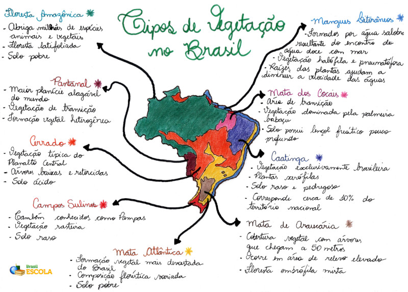

Tipos de Vegetação no Brasil
O Brasil possui uma rica diversidade de vegetação: nela se destacam oito tipos principais.
Isso se deve à sua grande extensão territorial e diversidade climática.
O tipo de vegetação de determinada região irá depender, primordialmente, do seu tipo de clima. Entretanto, essa regra aplica-se somente a vegetações naturais ou nativas, pois a formação vegetal é o primeiro elemento da paisagem que o homem modifica e, portanto, está em constante transformação.
O Brasil, por ter dimensões territoriais continentais, abriga oito tipos principais de vegetação natural. São eles:
Descrição das Vegetações
- Floresta Amazônica: de clima equatorial e conhecida como Amazônia Legal, abriga milhões de espécies animais e vegetais, sendo de vital importância ao equilíbrio ambiental do planeta. Ela é classificada como uma formação florestal Latifoliada, pois suas folhas são largas e agrupam-se densamente, geralmente atingindo grandes alturas.
- Mata Atlântica: caracterizada como uma floresta latifoliada tropical e de clima tropical úmido, foi a vegetação que mais sofreu devastação no Brasil, restando apenas 7% de sua cobertura original. Era uma vegetação que se estendia do Rio Grande do Norte ao Rio Grande do Sul, mas que foi intensamente degradada pelos portugueses para a extração de madeira e plantio de cana-de-açúcar.
Mapa Mental: Tipos de Vegetação no Brasil

- Caatinga: é uma vegetação típica de clima semiárido, localizada no Nordeste brasileiro. Possui plantas espinhosas e pobres em nutrientes. Nos últimos anos, vem sofrendo diversas agressões ambientais que causam empobrecimento do solo, dificultando mais ainda o desenvolvimento dessa região.
- Cerrado: típica do Planalto Central brasileiro e de clima tropical semiúmido, é a segunda maior formação vegetal do Brasil. Apesar de sua paisagem ser composta por árvores baixas e retorcidas, é a vegetação com maior biodiversidade do planeta. Somente nos últimos anos é que os ambientalistas vêm se preocupando com esse ecossistema, que sofre vários danos ambientais causados pela plantação de soja e cana-de-açúcar e pela pecuária.
- Pantanal: localizada no Mato Grosso e Mato Grosso do Sul, é considerada uma vegetação de transição, isto é, uma formação vegetal heterogênea composta por diferentes ecossistemas. Em determinadas épocas do ano, algumas porções de área são alagadas pelas cheias dos rios e é somente nas estiagens que a vegetação se desenvolve.
- Campos sulinos: também conhecidos como “pampas” e característicos de clima subtropical, apresentam vegetação rasteira com a predominância de capins e gramíneas.
- Mata de Araucária: com a predominância de pinheiros e localizada no estado do Paraná, é uma vegetação típica de clima subtropical. Sua cobertura original é quase inexistente em razão da intensa exploração de madeira para fabricação de móveis.
- Mangues: é um tipo de vegetação de formação litorânea, caracterizado principalmente por abranger diversas vegetações, ocorrendo em áreas baixas e, logo, sujeito à ação das marés.
O Brasil perdeu 13,4% da vegetação nativa dentre 1985 e 2019
| Região |
Porcentagem |
| Amazônia |
-11,2% |
| Mata Atlântica |
-10,3% |
| Caatinga |
-10,9% |
| Cerrado |
-21,3% |
| Pantanal |
-12% |
| Pampa |
-21% |
Informação: Os cinco países com maior extensão de floresta
- Rússia: A Rússia lidera o ranking com mais de 850 milhões de hectares de floresta. Esse número corresponde a 22% do total da área de floresta de todo o mundo. A biodiversidade é muito grande, servindo como habitat para espécies em extinção, como o tigre siberiano, a coruja Blakiston, considerada uma das maiores aves do mundo, e o leopardo-de-Amur. Devido ao tamanho e à diversidade, a floresta russa desempenha um papel importante, protegendo bacias hidrográficas e ajudando na conservação do solo. A economia russa também se beneficia da floresta, que gera empregos e produtos.
- Brasil: O Brasil, que tem 516 milhões de hectares cobertos por florestas naturais e plantadas, tem a maior extensão contínua de floresta tropical do planeta. A Amazônia é a maior do mundo com este tipo de vegetação. Apesar de não ser a maior em extensão territorial, a floresta brasileira possui a maior biodiversidade, com mais de 45 mil espécies, sendo 5 mil apenas de árvores e 3 mil espécies de peixes. Também no Brasil a floresta impulsiona a economia e serve como fonte de matéria-prima, de alimentos, produtos farmacêuticos, além de gerar empregos. A Floresta Amazônica tem sido muito comentada recentemente por ter diminuído a taxa desmatamento ao menor nível desde 1988, ano em que o monitoramento começou a ser feito.
- Canadá: Com 245 milhões de hectares de florestas, o Canadá é o terceiro país no ranking. Mais de 67% das florestas canadenses são compostas por coníferas, a chamada Floresta Boreal. Devido à exploração e à constante "guerra" com ambientalistas, em 2010, 21 empresas que usam a floresta como matéria-prima e nove grupos ambientalistas assinaram um acordo para proteger 76 milhões de hectares de mata virgem. No acordo, eles dividem a responsabilidade e assumem o compromisso de não desmatar e de proteger a diversidade do ecossistema.
- Estados Unidos: Os Estados Unidos possuem 226 milhões de hectares de florestas, número estável por mais de 110 anos, desde uma forte devastação nos anos 1800. Cerca de 7% das florestas norte-americanas são reservas. Atualmente a mata do país sofre com a seca e ataques de insetos. Em agosto de 2012, a Nasa divulgou imagens que mostram o resultado de um ataque de besouros numa floresta do Colorado. A perda foi tão grande que era possível ver os efeitos do espaço. As queimadas, que aconteceram devido ao período de seca, também puderam ser observadas do espaço.
- China: Apesar de ser o terceiro maior país do mundo, a China fica em quinto lugar considerando a extensão de florestas, são 160 milhões de hectares. A biodiversidade chinesa também é rica, devido à geografia e ao clima, que vai desde o clima tropical ao subártico. O país também serve de habitat para espécies ameaçadas, como o panda gigante. Em 2012, uma floresta fossilizada de quase 300 milhões de anos foi encontrada no norte da China. As cinzas que cobriram a floresta a deixaram preservada até hoje.